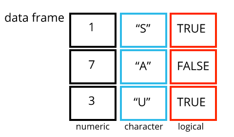

# A numeric vector:
c(1, 2, 3)[1] 1 2 3# A character vector:
c("banana", "orange", "apple")[1] "banana" "orange" "apple" # A logical vector:
c(TRUE, FALSE, TRUE)[1] TRUE FALSE TRUE# A numeric vector:
c(1, 2, 3)[1] 1 2 3# A character vector:
c("banana", "orange", "apple")[1] "banana" "orange" "apple" # A logical vector:
c(TRUE, FALSE, TRUE)[1] TRUE FALSE TRUE
. . .
Data often come to us in a form that is not suitable for analysis
Data tidying (or “wrangling”) is the process of re-formatting the data so it can be analyzed


gapminder-analysis in the data-analysis-course folder on your Desktop
data_raw to store raw data
data-tidying-practice.Rgapminder.csv file from this link, and put it in data_raw
The functions we have used so far are included in R (called “Base R”)
But sometimes we need to do something that is not available in Base R
Packages are collections of code that extend the functionality of R
tidyverseToday we will use the tidyverse set of packages for working with data
Install tidyverse using install.packages():
install.packages("tidyverse")The install.packages() function downloads the package to your computer
But R isn’t able to use the package yet
The library() function tells R to load a package so that we can use it
tidyversetidyverse package with library()
library(tidyverse)── Attaching core tidyverse packages ──────────────────────── tidyverse 2.0.0 ──
✔ dplyr 1.1.4 ✔ readr 2.1.5
✔ forcats 1.0.0 ✔ stringr 1.5.1
✔ ggplot2 3.5.2 ✔ tibble 3.2.1
✔ lubridate 1.9.4 ✔ tidyr 1.3.1
✔ purrr 1.0.4
── Conflicts ────────────────────────────────────────── tidyverse_conflicts() ──
✖ dplyr::filter() masks stats::filter()
✖ dplyr::lag() masks stats::lag()
ℹ Use the conflicted package (<http://conflicted.r-lib.org/>) to force all conflicts to become errorstidyversetidyverse actually includes multiple packages (dplyr, tidyr, readr, etc.)
read_csv() function to load a spreadsheet as a dataframe
.xls, .xlsx, .tsv, etc.Rows: 1704 Columns: 6
── Column specification ────────────────────────────────────────────────────────
Delimiter: ","
chr (2): country, continent
dbl (4): year, lifeExp, pop, gdpPercap
ℹ Use `spec()` to retrieve the full column specification for this data.
ℹ Specify the column types or set `show_col_types = FALSE` to quiet this message.gapminder <- read_csv("data_raw/gapminder.csv")gapminder# A tibble: 1,704 × 6
country continent year lifeExp pop gdpPercap
<chr> <chr> <dbl> <dbl> <dbl> <dbl>
1 Afghanistan Asia 1952 28.8 8425333 779.
2 Afghanistan Asia 1957 30.3 9240934 821.
3 Afghanistan Asia 1962 32.0 10267083 853.
4 Afghanistan Asia 1967 34.0 11537966 836.
5 Afghanistan Asia 1972 36.1 13079460 740.
6 Afghanistan Asia 1977 38.4 14880372 786.
# ℹ 1,698 more rowsWhat do you think this dataset is about?
What do you think the columns mean?
This is a dataset of economic statistics from various countries over time, from https://gapminder.org
The meaning of some columns is obvious (country, continent, year), but not others
pop: PopulationlifeExp: Life expectancy (寿命)gdpPercap: GDP per capita (一人当たりの国内総生産)arrange()arrange(gapminder, lifeExp)# A tibble: 1,704 × 6
country continent year lifeExp pop gdpPercap
<chr> <chr> <dbl> <dbl> <dbl> <dbl>
1 Rwanda Africa 1992 23.6 7290203 737.
2 Afghanistan Asia 1952 28.8 8425333 779.
3 Gambia Africa 1952 30 284320 485.
4 Angola Africa 1952 30.0 4232095 3521.
5 Sierra Leone Africa 1952 30.3 2143249 880.
6 Afghanistan Asia 1957 30.3 9240934 821.
# ℹ 1,698 more rowsarrange()desc()arrange(gapminder, desc(lifeExp))# A tibble: 1,704 × 6
country continent year lifeExp pop gdpPercap
<chr> <chr> <dbl> <dbl> <dbl> <dbl>
1 Japan Asia 2007 82.6 127467972 31656.
2 Hong Kong, China Asia 2007 82.2 6980412 39725.
3 Japan Asia 2002 82 127065841 28605.
4 Iceland Europe 2007 81.8 301931 36181.
5 Switzerland Europe 2007 81.7 7554661 37506.
6 Hong Kong, China Asia 2002 81.5 6762476 30209.
# ℹ 1,698 more rowsarrange()arrange(gapminder, continent, lifeExp)# A tibble: 1,704 × 6
country continent year lifeExp pop gdpPercap
<chr> <chr> <dbl> <dbl> <dbl> <dbl>
1 Rwanda Africa 1992 23.6 7290203 737.
2 Gambia Africa 1952 30 284320 485.
3 Angola Africa 1952 30.0 4232095 3521.
4 Sierra Leone Africa 1952 30.3 2143249 880.
5 Mozambique Africa 1952 31.3 6446316 469.
6 Sierra Leone Africa 1957 31.6 2295678 1004.
# ℹ 1,698 more rowsSort the data by year, first going from smallest to biggest, then from biggest to smallest.
What is the earliest year in the data?
What is the latest year in the data?
select()select(gapminder, year, country, gdpPercap)# A tibble: 1,704 × 3
year country gdpPercap
<dbl> <chr> <dbl>
1 1952 Afghanistan 779.
2 1957 Afghanistan 821.
3 1962 Afghanistan 853.
4 1967 Afghanistan 836.
5 1972 Afghanistan 740.
6 1977 Afghanistan 786.
# ℹ 1,698 more rowsgapminder is still the same:gapminder# A tibble: 1,704 × 6
country continent year lifeExp pop gdpPercap
<chr> <chr> <dbl> <dbl> <dbl> <dbl>
1 Afghanistan Asia 1952 28.8 8425333 779.
2 Afghanistan Asia 1957 30.3 9240934 821.
3 Afghanistan Asia 1962 32.0 10267083 853.
4 Afghanistan Asia 1967 34.0 11537966 836.
5 Afghanistan Asia 1972 36.1 13079460 740.
6 Afghanistan Asia 1977 38.4 14880372 786.
# ℹ 1,698 more rowsThis is because we have not saved any of the output
To do that, you need to create a new object with <-
gapminder_gdp <- select(gapminder, year, country, gdpPercap)During the last challenge, you needed to save the output of the select() function, then use it as input into the arrange() function
There is a simpler way to do this, called the “pipe”
The pipe is written like this: %>%
|>The pipe takes the output from one function and passes it to the input of the next function
You can think of it as saying “and then”
%>% do this, %>% do this…gapminder and then select only year, country, and population”gapminder %>% select(year, country, pop)# A tibble: 1,704 × 3
year country pop
<dbl> <chr> <dbl>
1 1952 Afghanistan 8425333
2 1957 Afghanistan 9240934
3 1962 Afghanistan 10267083
4 1967 Afghanistan 11537966
5 1972 Afghanistan 13079460
6 1977 Afghanistan 14880372
# ℹ 1,698 more rowsgapminder, and then select only year, country, and population, and then arrange by year”gapminder %>% select(year, country, pop) %>% arrange(year)# A tibble: 1,704 × 3
year country pop
<dbl> <chr> <dbl>
1 1952 Afghanistan 8425333
2 1952 Albania 1282697
3 1952 Algeria 9279525
4 1952 Angola 4232095
# ℹ 1,700 more rowsgapminder %>%
select(year, country, pop) %>%
arrange(year)# A tibble: 1,704 × 3
year country pop
<dbl> <chr> <dbl>
1 1952 Afghanistan 8425333
2 1952 Albania 1282697
3 1952 Algeria 9279525
4 1952 Angola 4232095
5 1952 Argentina 17876956
6 1952 Australia 8691212
# ℹ 1,698 more rowsThis way, you don’t have to save each intermediate step
This is a very useful way to manipulate data
I will now use the pipe (%>%) for the rest of the lesson
filter()Use the filter() function to only keep rows that meet a certain condition
For example, let’s only keep the data in Europe:
gapminder %>% filter(continent == "Europe")# A tibble: 360 × 6
country continent year lifeExp pop gdpPercap
<chr> <chr> <dbl> <dbl> <dbl> <dbl>
1 Albania Europe 1952 55.2 1282697 1601.
2 Albania Europe 1957 59.3 1476505 1942.
3 Albania Europe 1962 64.8 1728137 2313.
4 Albania Europe 1967 66.2 1984060 2760.
5 Albania Europe 1972 67.7 2263554 3313.
6 Albania Europe 1977 68.9 2509048 3533.
# ℹ 354 more rowsUsing the pipe (%>%) and the functions we have learned so far, filter the data to Asia, then select only the country, year, and population columns.
mutate()gapminder %>% mutate(pop = pop/1000000)# A tibble: 1,704 × 6
country continent year lifeExp pop gdpPercap
<chr> <chr> <dbl> <dbl> <dbl> <dbl>
1 Afghanistan Asia 1952 28.8 8.43 779.
2 Afghanistan Asia 1957 30.3 9.24 821.
3 Afghanistan Asia 1962 32.0 10.3 853.
4 Afghanistan Asia 1967 34.0 11.5 836.
5 Afghanistan Asia 1972 36.1 13.1 740.
6 Afghanistan Asia 1977 38.4 14.9 786.
# ℹ 1,698 more rowsmutate()gapminder %>% mutate(pop_mil = pop/1000000)# A tibble: 1,704 × 7
country continent year lifeExp pop gdpPercap pop_mil
<chr> <chr> <dbl> <dbl> <dbl> <dbl> <dbl>
1 Afghanistan Asia 1952 28.8 8425333 779. 8.43
2 Afghanistan Asia 1957 30.3 9240934 821. 9.24
3 Afghanistan Asia 1962 32.0 10267083 853. 10.3
4 Afghanistan Asia 1967 34.0 11537966 836. 11.5
5 Afghanistan Asia 1972 36.1 13079460 740. 13.1
6 Afghanistan Asia 1977 38.4 14880372 786. 14.9
# ℹ 1,698 more rowsThe gdpPercap column stands for Gross Domestic Product (GDP) per capita (per person)
Calculate the total GDP using mutate()
pop and gdpPercap columnssummarize()gapminder %>% summarize(mean_pop = mean(pop))# A tibble: 1 × 1
mean_pop
<dbl>
1 29601212.summarize()gapminder %>% summarize(total_pop = sum(pop))# A tibble: 1 × 1
total_pop
<dbl>
1 50440465801group_by() to do calculations per groupHowever, it is often more useful to calculate such summary statistics for particular groups
To do this, first specify the groups with group_by():
gapminder %>% group_by(continent)# A tibble: 1,704 × 6
# Groups: continent [5]
country continent year lifeExp pop gdpPercap
<chr> <chr> <dbl> <dbl> <dbl> <dbl>
1 Afghanistan Asia 1952 28.8 8425333 779.
2 Afghanistan Asia 1957 30.3 9240934 821.
3 Afghanistan Asia 1962 32.0 10267083 853.
4 Afghanistan Asia 1967 34.0 11537966 836.
# ℹ 1,700 more rowsgroup_by() to do calculations per groupsummarize() to calculate the summary statistic:gapminder %>%
group_by(continent) %>%
summarize(mean_pop = mean(pop))# A tibble: 5 × 2
continent mean_pop
<chr> <dbl>
1 Africa 9916003.
2 Americas 24504795.
3 Asia 77038722.
4 Europe 17169765.
5 Oceania 8874672.mutate() and summarize()mutate() calculates a new column (or over-writes an existing one) and keeps the number of rows the same
summarize() calculates a new column and decreases the number of rows
arrange()select()filter()mutate()summarize()group_by()%>%) to chain steps together